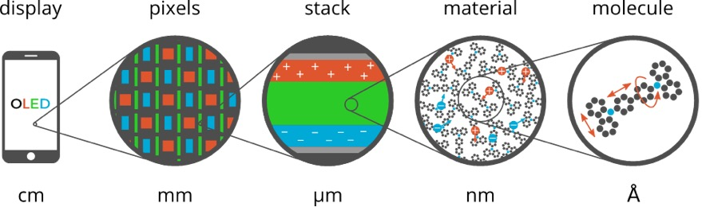

OLED workflows¶
Starting with the 2022 release of the Amsterdam Modeling Suite we include a set of workflow scripts for multiscale OLED modeling. These workflows are developed and validated in close collaboration with Simbeyond to bridge the gap between ab-initio atomistic modeling of OLED molecules with AMS, and device level kinetic Monte Carlo simulations using Simbeyond’s Bumblebee code. Together with Simbeyond, we attempt to provide a fully integrated multiscale simulation platform for the digital screening and prediction of successful OLED materials and devices.
{kind=link}
The Amsterdam Modeling Suite implements the atomistic simulation part of this multiscale toolchain in the form of two workflow scripts:
{kind=link}
- Deposition
- The first step simulates the growth of a thin film in a molecular dynamics and force-bias Monte Carlo calculation mimicking physical vapor deposition.
- Properties
- In the second step the morphology resulting from the deposition is used to obtain the distributions (and possibly spatial correlations) of molecular properties such as ionization potential, electron affinity and exciton energies at the DFT level. Each molecule’s environment is taken into account in a polarizable QM/MM scheme using the DRF model.
The output of the Properties workflow is an HDF5 file containing a summary of the results for a material. This file can be opened in AMSview for a visualization of the results, but also directly imported into Simbeyond’s Bumblebee code to use it in simulations at the device level.
This manual page describes the technical details and options of the OLED workflow scripts. For a more hands-on introduction, you may want to start with the GUI tutorial, that will guide you through the entire workflow using the hole transport material alpha-NPD as an example
Note
The OLED workflow scripts use ADF, DFTB, and the ForceField engine. You will therefore need a license for these components in order to use the workflows.
Deposition¶
The deposition workflow implements a series of mixed molecular dynamics and force-bias Monte Carlo calculations to simulate the growth of a thin film with physical vapor deposition.
Basically the molecule gun in the is used to shoot molecules at the substrate. Upon reaching the surface, the force-bias Monte Carlo method is used to accelerate the search for favorable adsorption sites. This process is repeated until a thin film of a user defined thickness has grown on the substrate.
To make this process computationally more efficient, the deposition happens in so called “cycles”. At the end of each deposition cycle, the bulk material at the bottom of the growing film is “trimmed off” and stored. Only the two top layers (each about 10 Å thick) are transfered to the next deposition cycle, where the lower of the two layers is frozen. This ensures that the trimmed off parts of the system fit perfectly together when the system is reassembled in the end of the simulation. By depositing in cycles we avoid simulating a lot of bulk material and are able to make the total computational cost linear in the thickness of the deposited film.
At the end of the simulation the layer deposited by the individual cycles are stacked and a short molecular dynamics calculation on the entire film is used to anneal it from the deposition temperature down to 300K at ambient pressure.
An entire deposition with 6 dosition cycles (and the final equilibration to room temperature) is shown in the video on the right.
Basic input¶
The minimal input to the deposition workflow just specifies what to deposit:
#!/bin/sh
DEPOSITION_JOBNAME=myDeposition $AMSBIN/oled-deposition << EOF
Molecule
SystemName myMol
End
System myMol
...
End
EOF
The Molecule block is only really used when depositing mixed molecule materials, e.g. host-guest systems. This will be explained in a separate section below. For a single molecule deposition there should just be one Molecule block that references the only System block by name via the SystemName keyword, as shown in the example above.
The System block used by the OLED deposition script closely follows the System block in the input for the AMS driver, but supports only a subset of the keywords:
SystemType: Block Recurring: True Description: Specification of the chemical system. For some applications more than one system may be present in the input. In this case, all systems except one must have a non-empty string ID specified after the System keyword. The system without an ID is considered the main one. AtomsType: Non-standard block Description: The atom types and coordinates. Unit can be specified in the header. Default unit is Angstrom. GeometryFileType: String Description: Read the geometry from a file (instead of from Atoms and Lattice blocks). Supported formats: .xyz BondOrdersType: Non-standard block Description: Defined bond orders. May by used by MM engines.
Just like in the AMS driver, as an alternative to the System block, you an also use the LoadSystem block to load a system directly from a .rkf file of a previous calculation.
The deposition workflow uses the ForceField engine for the molecular dynamics simulation of the physical vapor deposition.
In order to also support the deposition of metal containing compounds, we use the UFF force field with the UFF4MOF-II parametrization [1] for the deposition.
As with any calculation with the ForceField engine you may manually provide (UFF4MOF-II) atom-types, atomic charges and bond orders in the input file:
System
Atoms
C [...] ForceField.Type=C_R ForceField.Charge=-0.1186
N [...] ForceField.Type=N_R ForceField.Charge=-0.2563
H [...] ForceField.Type=H_ ForceField.Charge=+0.1021
[...]
End
BondOrders
1 2 1.0
1 5 1.5
1 6 1.5
[...]
End
End
Whatever is not specified in the input will automatically be determined: the input system is optimized with ADF using the S12g exchange-correlation functional with a TZP basis set. At the optimized geometry, the Charge Model 5 is used to calculate the atomic charges, while the rounded Nalewajski-Mrozek bond orders determine the topology. See the ADF manual for details on the calculation of charges and bond orders. Finally, using the topology determined by the calculated bond orders, the automatic UFF atom-typing that is built into the ForceField engine is used to determine the atom-types.
If you want to make sure the correct atom-types and bonds are used in your calculation, we recommend building the system in AMSinput, where you can visually check the bond orders and atom-types to make sure they are correct.
The result can then be exported into a file as a System block via File → Export coordinates → .in.
For the atomic charges we recommend relying on the automatic calculation with ADF. (Just make sure the ForceField.Charge suffixes are not included in the atom block. Their absence will trigger the automatic charge calculation with ADF.)
By default a box of 60 x 60 x 120 Å is deposited. The first two dimensions give the surface area of the deposited layer, while the third dimension is the thickness of the layer.
The size of the deposited box can be changed using the Size keyword in the Box block:
Box
Size 60 60 120
End
BoxType: Block Description: Specifications of the box into which the material is deposited. SizeType: Float List Default value: [60.0, 60.0, 120.0] Unit: Angstrom GUI name: Box size Description: Specify the desired size of the box. The final deposited box may have a different size. The x- and y-axis are perpendicular to the direction of deposition, so these may be regarded as the width of the growing layer. The z-axis is the direction along which the deposition happens, so this determines the thickness of the deposited layer. Note that the x- and y-axis will be ignored if a custom substrate is used: the are of the box is then determined by the lattice of the substrate. The z-axis can still be freely chosen, but should be large enough that there is enough space for the substrate itself and to deposit more molecules on top of it.
With sizes typical for molecules used in OLED devices, the default box size results in a deposition of ~500 molecules. Note that the computational time of a deposition scales linearly with the thickness of the layer, but quadratically with the surface area. This is because a larger area requires both the deposition of more molecules to fill the box, but also makes each MD step more expensive as more molecules have to be simulated at the same time. When increasing the thickness of the layer, molecules at the bottom are first frozen, and later removed from the simulation altogether, giving an overall linear scaling.
The temperature at which the deposition is performed can be configured in the Deposition section.
Deposition
Temperature float
End
DepositionType: Block Description: Specifies the details of how molecules are deposited. TemperatureType: Float Default value: 600.0 Description: The temperature at which the deposition happens.
Finally, there are a couple more technical options in the Deposition section, that we suggest to leave at their default values.
Deposition
Frequency integer
TimeStep float
ConstrainHXBonds Yes/No
NumMolecules integer
End
DepositionType: Block Description: Specifies the details of how molecules are deposited. FrequencyType: Integer Default value: 10000 Description: The frequency in MD steps at which new molecules will be added to the system. TimeStepType: Float Default value: 1.0 Unit: Femtoseconds Description: The time difference per step. ConstrainHXBondsType: Bool Default value: Yes GUI name: Constrain H-* bonds Description: Constrain the bond length for all H-* bonds (i.e. any bond to a hydrogen atom). Doing this allows choosing a larger time step. If this option is disabled, the TimeStep needs to be reduced manually. NumMoleculesType: Integer Description: The number of molecules that we will try to deposit. If not specified the number will be determined automatically such that the box becomes approximately full.
Output¶
Running the oled-deposition workflow script creates a single directory in which you can find all results of a deposition.
By default this directory is named deposition.workdir, but in order to avoid name clashes, that location can be changed with the DEPOSITION_WORKDIR environment variable, similar to AMS_JOBNAME for the AMS driver. The example below will collect all results in the directory myMol.workdir:
#!/bin/sh
DEPOSITION_WORKDIR=myMol $AMSBIN/oled-deposition << EOF
...
EOF
Let us go through all files and folders in the working directory in the order in which they are created.
Firstly, the working directory contains a logfile.
The contents of the logfile are identical to what you see on standard output when running the oled-deposition workflow.
The deposition workflow starts with a couple of calculations on single molecules in vacuum. Each of them runs in a separate folder, in which you can find the usual AMS output files (such as ams.rkf):
dft_opt/
ff_opt/
equilibrate_ff_input_molecule/
The dft_opt directory contains the results of the initial geometry optimization with ADF, which is used to determine the atomic charges and bond orders if these were not specified in the input. The ff_opt directory contains the results of a subsequent geometry optimization using the ForceField engine with the UFF4MOF-II forcefield. In this step the atom-types are determined if they were not specified in the input already. Finally in the equilibrate_ff_input_molecule directory a short MD simulation at the deposition temperature is performed to equilibrate the molecule to the desired temperature. We suggest visualizing the trajectory of this equilibration in AMSmovie to make sure the molecule does not undergo unexpected conformational changes that could be caused by wrong atom-types or bonds. If the molecule behaves strangely (or falls apart) at this point, one may need to go back and assign atom-types and bonds manually in the input.
When depositing mixtures you will see multiple instances of the three directories above: one for each deposited species.
Once all the preparatory work is done, the actual deposition cycles each write a folder and (upon completion of the cycle) two files:
depo_cycle_1/
depo_box.1.in
depo_box.1.xyz
You can follow the progress of your deposition by opening the ams.rkf in the last depo_cycle_*/ directory.
The depo_box.*.in and depo_box.*.xyz files contain the entire morphology deposited so far: by visualizing them in order you can watch your material grow!
Important
The files with the .in extension contain the System geometry in form of a System block. This format contains bond orders, force field atom-types as well as atomic charges. It can be opened in AMSinput and PLAMS and should be the preferred format when working with the OLED workflow scripts in AMS. The .xyz file is in extended XYZ format does not contain that extra information. Always use a .in file when transferring a system from one script to the next, e.g. when going from the OLED deposition to the OLED properties workflow.
Once all molecules have been deposited the entire box is annealed from the deposition temperature down to room temperature. This creates one directory and (upon completion) a .in and .xyz file containing the annealed morphologies:
equilibrate_box/
equil_box.in
equil_box.xyz
The last step is to take the room temperature morphology and perform a geometry optimization on it.
This essentially removes all thermal vibrations and results in a geometry that is relaxed at the force field level.
As you might expect, the last step also produces a folder and (upon completion) a .in and .xyz file:
optimize_box/
opt_box.in
opt_box.xyz
It is up to the user to decide whether to continue to the OLED properties workflow with the morphology from equil_box.in (equilibrated to 300K) or opt_box.in file (fully relaxed). (We recommend using the fully relaxed morphology though.)
Deposition of host-guest materials¶
A deposition of host-guest materials can easily be done by specifying multiple Molecule and System blocks in the input. The following runscript generates a 95% to 5% mixture (by number of molecules) of two compounds:
#!/bin/sh
DEPOSITION_JOBNAME=host_guest $AMSBIN/oled-deposition << EOF
Molecule
SystemName myHost
PartialPressure 0.95
End
Molecule
SystemName myGuest
PartialPressure 0.05
End
System myHost
...
End
System myGuest
...
End
EOF
The partial pressures are unitless and only the relative ratios between the different molecules matter.
Molecule
PartialPressure float
SystemName string
End
MoleculeType: Block Recurring: True GUI name: Molecules Description: Specification of the molecule to be deposited. PartialPressureType: Float Default value: 1.0 Description: The relative occurrence of the molecule with regard to other deposited species. Only relevant for mixed molecule depositions. SystemNameType: String GUI name: Molecule Description: String ID of a named [System] to be inserted. The lattice specified with this System, if any, is ignored and the main system’s lattice is used instead.
You can have an arbitrary number of Molecule blocks in your input to deposit multi-component mixtures. Obviously, the box your are depositing must be large enough that it still contains at least a few molecules of the rarest component.
Note that multiple Molecule and System blocks can also be used to deposit different conformers of the same compound. While conformational changes can in principle happen over the course of the MD simulation, it may be a good idea to deposit a mixture of conformers directly if their geometries are very different.
Deposition of interfaces¶
By default the deposition will use a single graphene layer as a substrate.
The graphene layer is removed after the first deposition cycle and will not be included in the output morphologies, i.e. the .in files in the working directory.
Note that the graphene layer is not present in the annealing of the entire morphology from deposition temperature to 300K, which is performed at the end of the workflow.
The result of this is that both the bottom and top of the deposited thin-film by default represents an interface between the material and a vacuum.
Instead of depositing on a clean graphene sheet, the deposition workflow also supports custom substrates.
This is intended to be used for depositing a thin film of one material on top of another material and allows users to study the interface between the two.
A custom substrate is set up using the Substrate and SubstrateSystem keys in the Box block.
Box
Substrate [Graphene | Custom]
SubstrateSystem string
End
BoxType: Block Description: Specifications of the box into which the material is deposited. SubstrateType: Multiple Choice Default value: Graphene Options: [Graphene, Custom] Description: The substrate on which to grow the layer. SubstrateSystemType: String GUI name: Substrate Description: String ID of a named [System] to be used as a substrate.
Here the value of the SubstrateSystem refers to a named System block in the input, representing the geometry of the substrate. The following example shows how to deposit a molecule B on top of a substrate of molecule A:
#!/bin/sh
DEPOSITION_JOBNAME=molB_on_molA $AMSBIN/oled-deposition << EOF
Molecule
SystemName molB
End
System molB
...
End
Box
Size 0 0 240
Substrate Custom
SubstrateSystem molA_substrate
End
System molA_substrate
Atoms
...
End
BondOrders
...
End
Lattice
...
End
End
EOF
The contents of the block System molA_substrate should be obtained by first running a deposition of molecule A: just use the System block found in e.g. the equil_box.in file of that deposition as the custom substrate for the next job.
(Note that no attempt will be made to automatically determine atomic charges, bond orders, or force-field atom types for the molecules in the substrate.
Taking the System block from the results of an earlier deposition is the easiest way ensure you are using exactly the same bonds, atom types and charges for the substrate molecules in the new calculation.)
Note that the Box%Size in the x- and y-direction is ignored when using a custom substrate: the size of the custom substrate is used instead. The thickness of the layer can be set manually when using a custom substrate, but it needs to accommodate both the already existing substrate as well as the newly grown film on top. Assume that the thickness of the substrate film is 120 Å in the example above. By setting the the z-value of the Box%Size to 240 Å, we will have space to accomodate the substrate and then grow another layer of 120 Å thickness on top of it. Note that while the default graphene layer is removed from the morphology, a custom substrate will be included in the morphology.
Restarting a deposition¶
The OLED workflow scripts are based on the PLAMS scripting framework. As such it can rely on the PLAMS rerun prevention to implement restarting of interrupted depositions.
The easiest way to restart a deposition is to include the --restart (or short: -r) command line flag:
#!/bin/sh
DEPOSITION_JOBNAME=myDeposition $AMSBIN/oled-deposition --restart << EOF
...
EOF
This first (interrupted) run will have created the myDeposition.workdir directory. Running the above script again will move that directory to myDeposition.workdir.res and reuse all successful jobs from the first run. (People already familiar with PLAMS will recognize that this works just like the -r flag on the PLAMS launch script.) Note that this does not restart the previous deposition precisely at the point where it was interrupted. Instead it restarts from the beginning of the last deposition cycle.
When running a deposition workflow on a batch system such as SLURM, you may want to consider always including the --restart flag in your runscript. It is not a problem if there are no previous results to restart from, but in case your job gets interrupted and automatically rescheduled, the --restart flag will make sure that it continues (approximately) where it stopped.
There is also the RestartWorkdir keyword in the input file:
#!/bin/sh
DEPOSITION_JOBNAME=newDepo $AMSBIN/oled-deposition << EOF
RestartWorkdir oldDepo.workdir
...
EOF
RestartWorkdirType: String Description: Uses the data from the working directory of a previously run deposition workflow for restarting. Under the hood this uses the normal rerun-prevention available in PLAMS: it may reuse results from old jobs instead of running them again.
While this can be used to accomplish the same thing the --restart flag would do, its best use is to specify a RestartWorkdir of a previous deposition of the same molecules. This can save you the initial step of doing the DFT calcultions in order to determine the atomic charges and bonds. A perfect use it when you have already deposited a mixture, and later decide to change the ratio between the compounds: by specifying the working directory of the first deposition the initial DFT calculations can be skipped entirely.
Properties¶
Embedding
Charges [FFInput | DFTB | DFT]
Cutoff float
Metric [CoM | Atoms | Atoms_noH]
Type [None | DRF]
End
EmbeddingType: Block Description: Configures details of how the environment is taken into account. ChargesType: Multiple Choice Default value: DFT Options: [FFInput, DFTB, DFT] Description: Which atomic charges to use for the DRF embedding. • FFInput: Use the ForceField.Charge atomic properties from the system in the input as the DRF charges. • DFTB: Use the self-consistent Mulliken charges from a quick DFTB calculation with the GFN1-xTB model. • DFT: Use the MDC-D charges from a relatively quick DFT calculation using LDA and a DZP basis set. CutoffType: Float Default value: 15.0 Unit: Angstrom Description: The cutoff distance determining which molecules will be considered the environment of the central molecule. The maximum possible cutoff distance is half the length of the smallest lattice vector. The distance can be measured using different metrics, see the Metrickeyword.MetricType: Multiple Choice Default value: Atoms Options: [CoM, Atoms, Atoms_noH] Description: The metric used to calculate the distance between two molecules. • CoM: use the distance between the centers of mass of the two molecules. • Atoms: Use the distance between the two closest atoms of two molecules. • Atoms_noH: Use the distance between the closest non-hydrogen atoms of the two molecules. TypeType: Multiple Choice Default value: DRF Options: [None, DRF] Description: The type of embedding used to simulate the molecular environment.
JobRunner string
JobRunnerType: String Default value: local:*,4 Description: Configures how the jobs will be executed. • local:N,M: Run the jobs locally. HereNis the number of jobs to run in parallel, andMis the number of CPU cores used by each job. The total number of CPU cores used will be the product ofNandM. Note thatNorMcan be replaced by the\*wildcard. In that case the missing number will be automatically determined such that in total$NSCMCPU cores will be utilized. If$NSCMis not set, the entire machine will be utilized. •batch_system:submit_cmd: Submit the individual jobs to a batch system. Example:slurm:sbatch -p mars -N 1 -n 4will submit each job with 4 tasks/cores on 1 node to themarspartition of a SLURM batch system. Please refer to the PLAMS GridRunner documentation for a list of supported batch systems.
LogProgressEvery float
LogProgressEveryType: Float Default value: 60.0 Unit: Seconds Description: How often to print progress information to the logfile.
RestartWorkdir string
RestartWorkdirType: String Description: Uses the data from the working directory of a previously run properties workflow for restarting. Under the hood this uses the normal rerun-prevention available in PLAMS: it may reuse results from old jobs instead of running them again.
NumAdditionalEnergies integer
NumAdditionalEnergiesType: Integer Default value: 1 Description: The number of additional orbital energies to write to the HDF5 file. A value of N means to write everything up to HOMO-N and LUMO+N.
NumExcitations integer
NumExcitationsType: Integer Default value: 1 Description: The number of exited states to calculate. By default the S_1 and T_1 states will be calculated. The calculation of excited states is currently only supported for systems with a closed-shell ground state.
TransferIntegrals
Cutoff float
Metric [CoM | Atoms | Atoms_noH]
Type [None | DFTB]
End
TransferIntegralsType: Block Description: Configures the details of the calculation of electron and hole transfer integrals. CutoffType: Float Default value: 4.0 Unit: Angstrom Description: Transfer integrals will be calculated for all molecule pairs within a cutoff distance from each other. This distance can be measured using different metrics, see the corresponding Metrickeyword.MetricType: Multiple Choice Default value: Atoms Options: [CoM, Atoms, Atoms_noH] Description: The metric used to calculate the distance between two molecules. • CoM: use the distance between the centers of mass of the two molecules. • Atoms: Use the distance between the two closest atoms of two molecules. • Atoms_noH: Use the distance between the closest non-hydrogen atoms of the two molecules. TypeType: Multiple Choice Default value: DFTB Options: [None, DFTB] Description: The method used for the calculation of the transfer integrals. By default the transfer integrals are calculated with DFTB (using the GFN1-xTB) model Hamiltonian. Selecting Noneskips the calculation of the transfer integrals altogether.
OccupationSmearing [None | Ions | All]
OccupationSmearingType: Multiple Choice Default value: Ions Options: [None, Ions, All] Description: Determines for which systems the electron smearing feature in ADF will be used. If enabled, the molecular orbital occupations will be smeared out with a 300K Fermi-Dirac distribution. This makes SCF convergence easier, as the occupation of energetically close orbitals does not jump when their energetic order flips. See the ADF manual for details. It is recommended to keep this option enabled for the ionic systems, which are more likely to suffer from difficult SCF convergence.
Relax [None | Neutral | All]
RelaxType: Multiple Choice Default value: All Options: [None, Neutral, All] Description: Which geometries to relax prior to taking the energy differences for the calculation of ionization potential and electron affinity. The relaxation is done at the DFTB level using the GFN1-xTB model Hamiltonian with electrostatic embedding in a UFF environment. • None: Use the geometries directly from the input. • Neutral: Relax the uncharged molecule and use its optimized geometry for the neutral as well as the ionic systems. This gives (approximately) the vertial ionization potential and electron affinity. • All: Individually relax the neutral systems and the ions before calculating the total energies. This gives (approximately) the adiabatic ionization potential and electron affinity.
Output¶
TODO: Describe relevant section on the HDF5 file.
| [1] | D.E.Coupry, M.A. Addicoat, and T. Heine, An Extension of the Universal Force Field for Metal-Organic Frameworks, J. Chem. Theory Comput. 12, 5215-5225 (2016) |